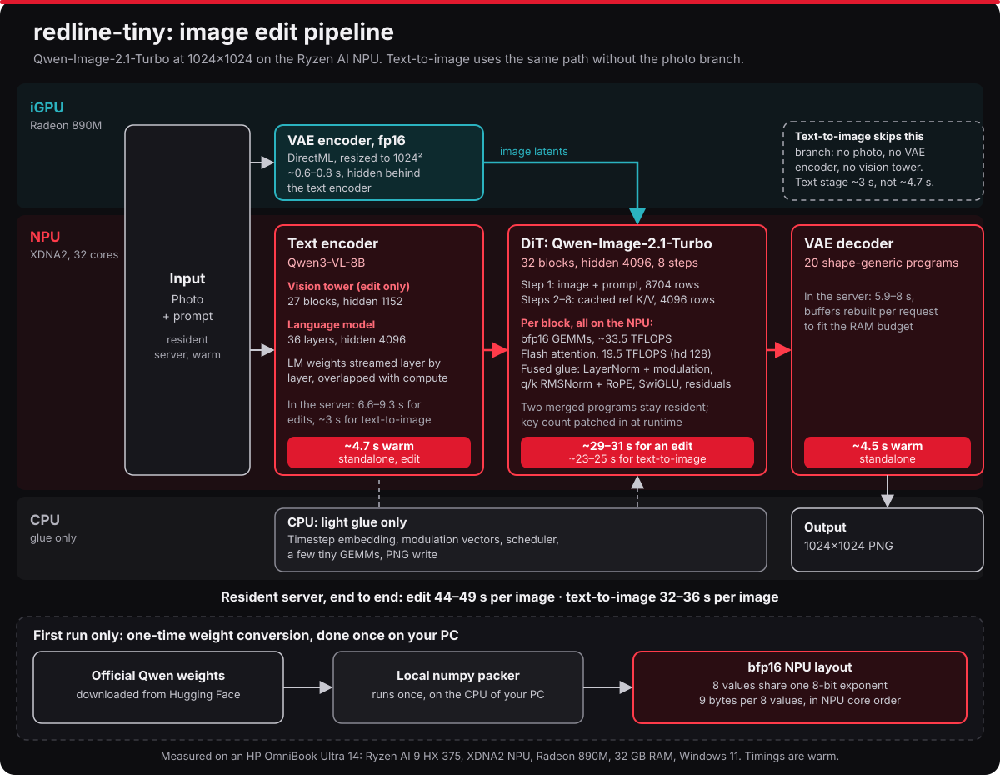
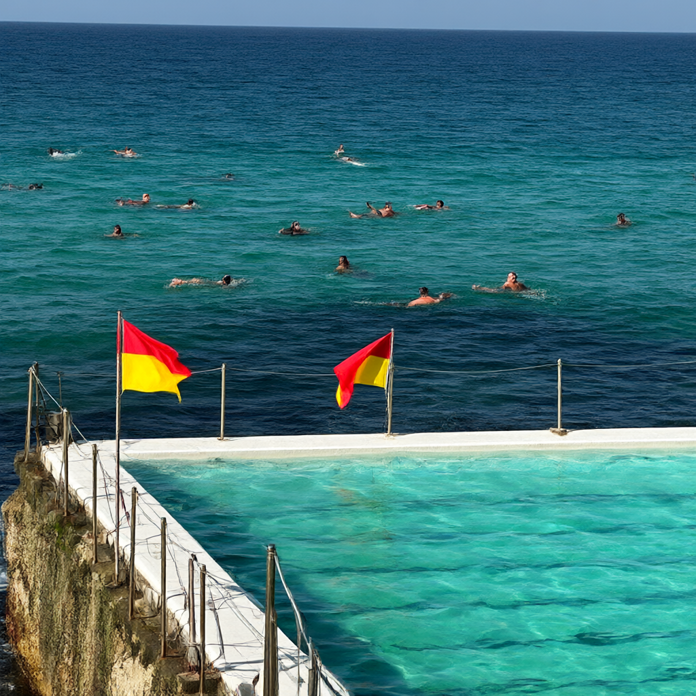
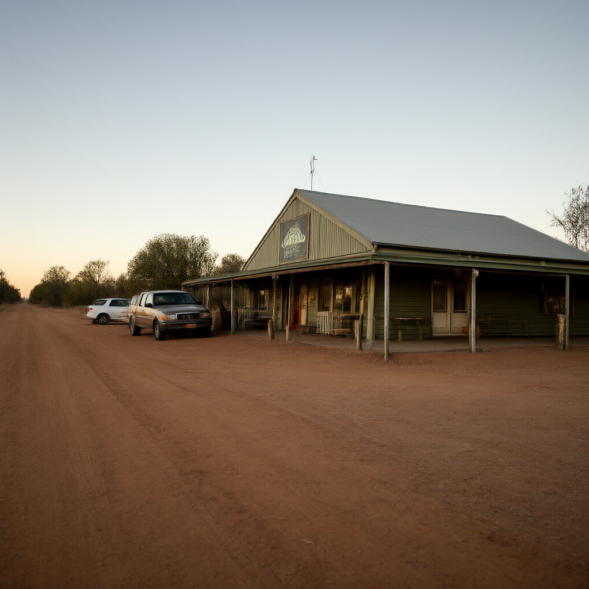

What it is
Drop in a photo and say what should change, or describe a new picture. The text encoder, the 32-block DiT and the VAE decoder all run on the NPU. The Radeon iGPU encodes the input photo while the NPU reads the prompt, and the CPU only does glue.
Models stay loaded between requests. The same prompt, seed and photo give the same bytes every time.
Ryzen AI 9 HX 375 (HP OmniBook Ultra 14). "tiny" is the laptop NPU build. A bigger sibling is coming :)
Pipeline
Red is the NPU, teal the iGPU, grey the CPU. The photo encode on the iGPU overlaps the text encoder, so it costs nothing. Text-to-image skips the photo branch.

Weights are bfp16: 8 values share one 8-bit exponent, 9 bytes per 8 values, laid out in the order the NPU cores read them. The conversion from the official weights runs once on your PC. What worked and what didn't is in AMD kernel hell.
Benchmarks
Ryzen AI 9 HX 375, 32 GB, warm server. Measured back to back against VigenFlow on the same laptop, from the same input and starting noise.
| redline-tiny | VigenFlow | |
|---|---|---|
| Edit, per image | 44 s | 51–53 s E2E, 75 s wall incl. loading |
| DiT, 8-step edit | 30.5 s | 42.4–44.0 s |
| Text-to-image, per image | 32–37 s | 32.9–33.5 s E2E, 42–44 s wall |
| VAE decode | 4.5 s warm, 6–7 s in the server | 2.8 s |
| One-shot edit incl. all model loading | 66.5–69.8 s | 74.8–75.6 s |
The DiT is faster mostly because the per-block glue (norms, RoPE, SwiGLU, residuals) runs fused on the NPU instead of on the CPU. The VAE decode and the text encoder cold start are still slower here.
Gallery
Text-to-image on the NPU, 1024×1024, 8 steps, seed 0.


Requirements
- AMD Ryzen AI 300-series with an XDNA2 NPU. Only tested on the HX 375; reports from other chips are welcome.
- 32 GB RAM. The NPU's buffers are pinned in system RAM, and the DiT alone peaks around 12 GB.
- Windows 11 with NPU driver 32.0.20101.3760 or newer (XRT 2.21), from AMD Software: Adrenalin Edition or your laptop maker. Not the
NPU_RAI_*_WHQL.zipdrivers from the Ryzen AI Software page: those are the older 32.0.203.x branch. - About 52 GB of disk.
Install
- Download the ZIP from GitHub and unzip it somewhere short, like
C:\redline-tiny. - Run
Install.cmd. It checks your PC and asks whether you already have the model and the NPU programs. Anything missing is only downloaded after it tells you what and how big. Packing the weights for the NPU takes a few minutes, once. - Double-click
redline-tinyon the desktop. The app opens in your browser.
Install.cmd -CheckOnly checks the chip, driver, RAM and disk without downloading anything.
Credits and licences
- Code: Apache-2.0. Some GEMM kernels are derived from AMD's mlir-aie examples (Apache-2.0 WITH LLVM-exception); everything is built with mlir-aie IRON and Peano.
- VigenFlow showed the way: the runtime-patched attention key count and the shape-generic VAE decoder programs come from it, rebuilt from scratch. 16 beers in debt.
- Model: Qwen-Image-2.1-Turbo by the Qwen team, under the Qwen Research License, non-commercial use only. The installer downloads the official files from Hugging Face.